Setting up an eXist development environment using eclipse.
Download and install Java 1.5 or 1.6
Download and install eclipse J2EE
Launch eclipse and add the plug-ins
Subclipse
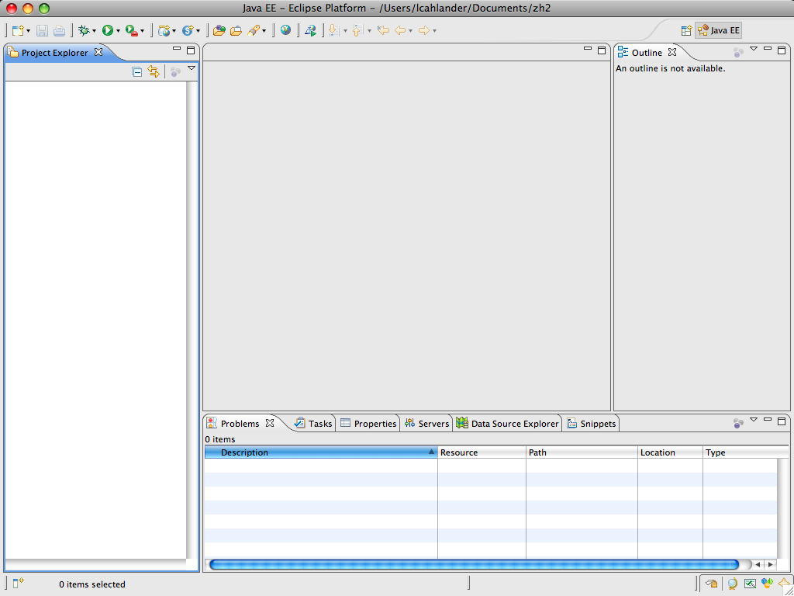
Install the subclipse plug-in for eclipse.
Select Help->Software Updates...
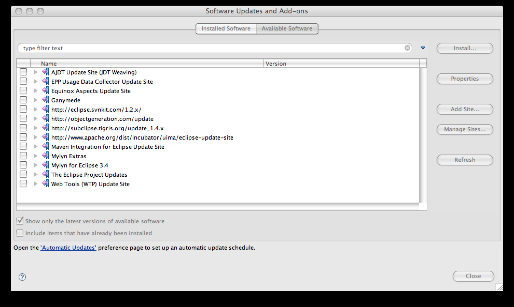
Click on Add Site...
Enter:
http://subclipse.tigris.org/update_1.4.x
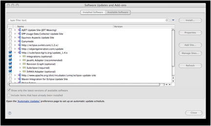
Select all of the entries under http://subclipse.tigris.org/update_1.4.x
Click on Install...
Checkout eXist 1.3 from SVN repositories.
Open the SVN Repository Exploring perspective.

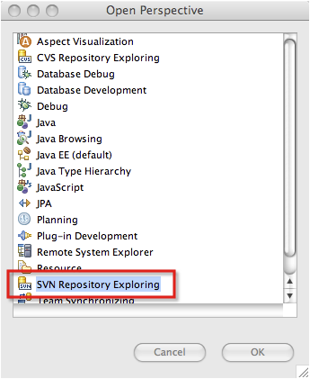
Select Add SVN Repository
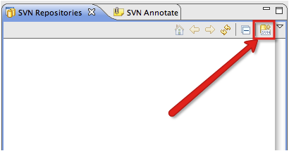
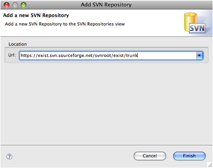
Enter https://exist.svn.sourceforge.net/svnroot/exist/trunk
Click on Finish
The repository will show up in the SVN Repositiries window.
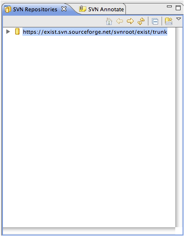
Expand the view of the repository.
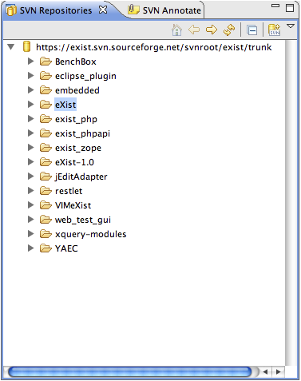
Right click on the eXist project and select Checkout....
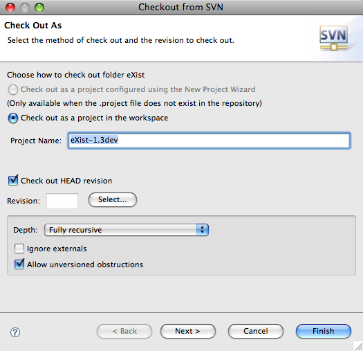
Click on Finish
Adding the activation.jar file to the build path. This is necessary in order to be able to run the eclipse debugger on the eXist codebase.
Right-click on the exist project and select Properties.
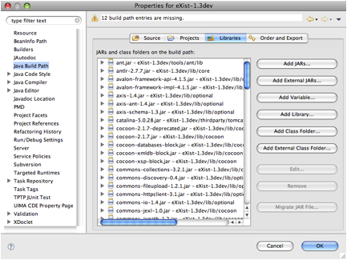
Select the Libraries tab.
Click on Add Jars...
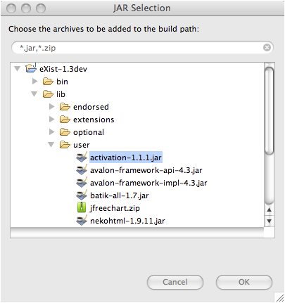
Select /lib/user/activation-1.1.1.jar
Click on OK.
Close eclipse.
Compiling exist from the command line within the exist-dev1.3 folder.
In extensions/build.properties, change all of the entries from false to true:
Run:
./build.sh clean
./build.sh download-additional-jars
./build.sh
Restart eclipse.
Refresh the project.
Create a Debug Configuration.
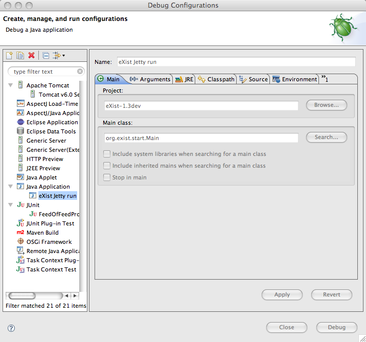
Select Java Application and click on New.
Title it eXist Jetty run.
Click on Browse... and select the eXist-1.3dev project.
Enter org.exist.start.Main as the Main class.
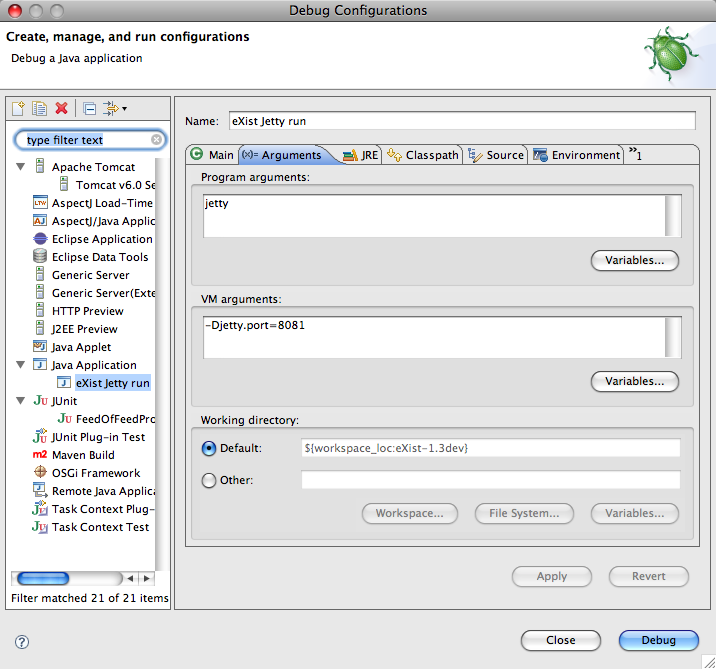
Select the Argumentstab.
Enter jetty in the Program arguments field.
If you wish to run Jetty on another port other than the default of 8080, then enter -Djetty.port={port number} in the VM arguments field.
Here is a list program arguments that can be used and their descriptions.
| Argument | Description |
| Jetty | |
Here is a list VM arguments that can be used and their descriptions.
| Argument | Description |
| -Djetty.port={port number} | Launch jetty using specified port instead of port 8080 |
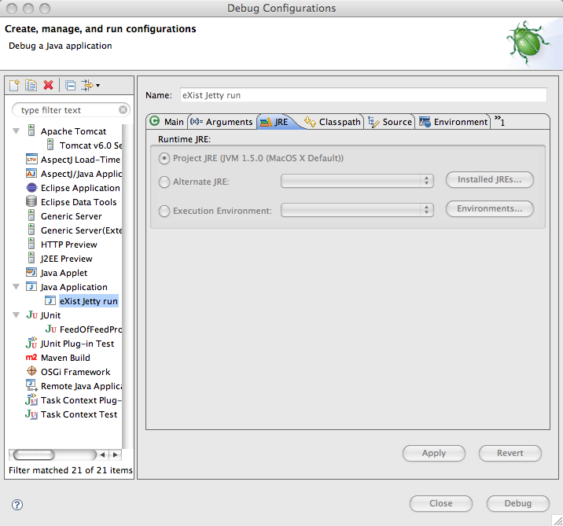
There is no need to change the JRE tab.

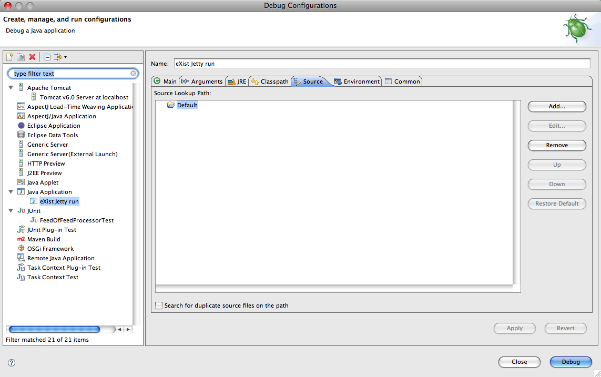
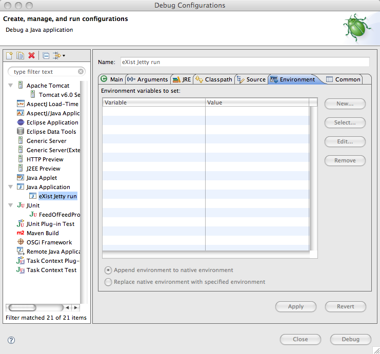
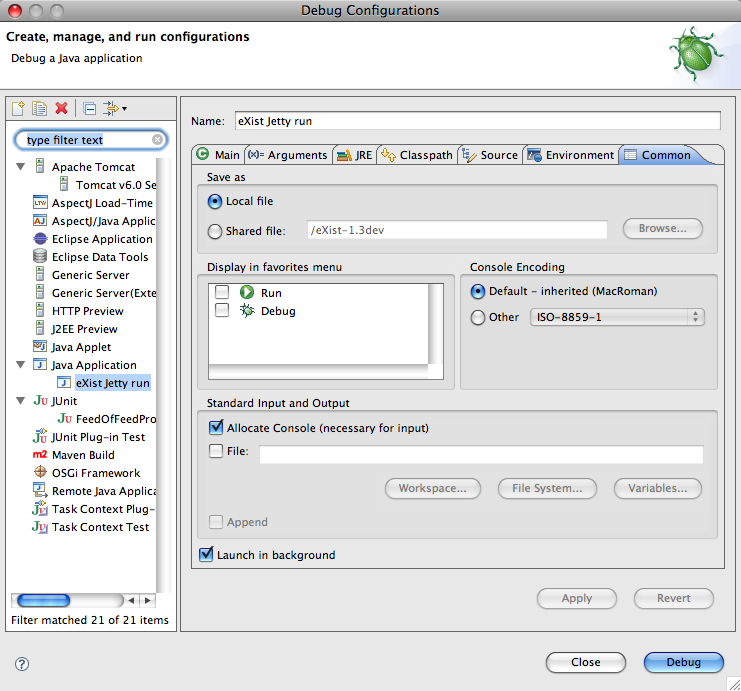
Your environment is now set up.